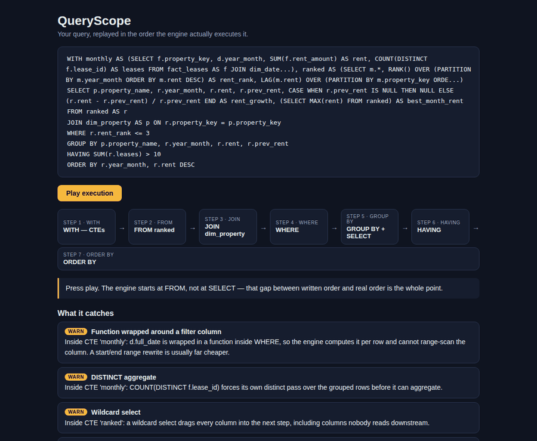

COUNT(DISTINCT x) forces its own distinct pass over the grouped rows.WHERE YEAR(created_at) = 2026 defeats index range scans.python -m queryscope your_query.sql — any dialect sqlglot speaks
(Snowflake, BigQuery, DuckDB, Postgres, Spark, and more).